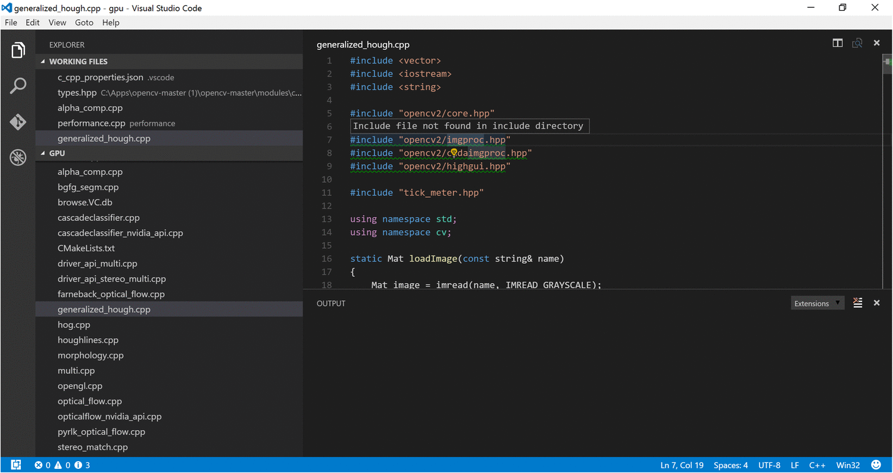
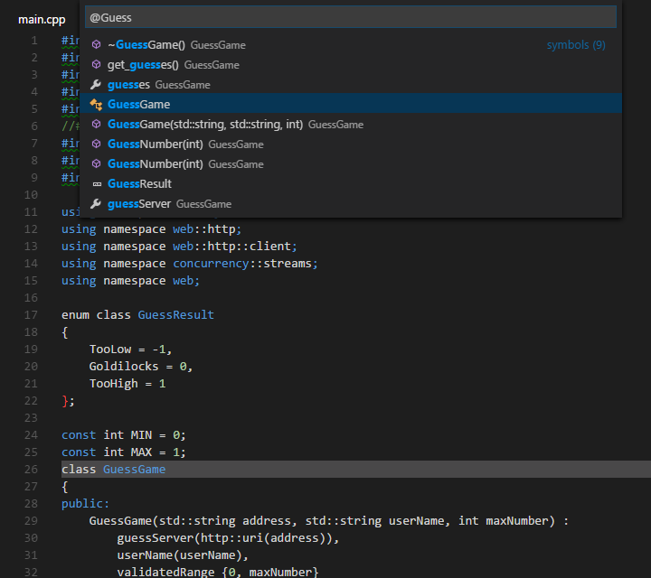
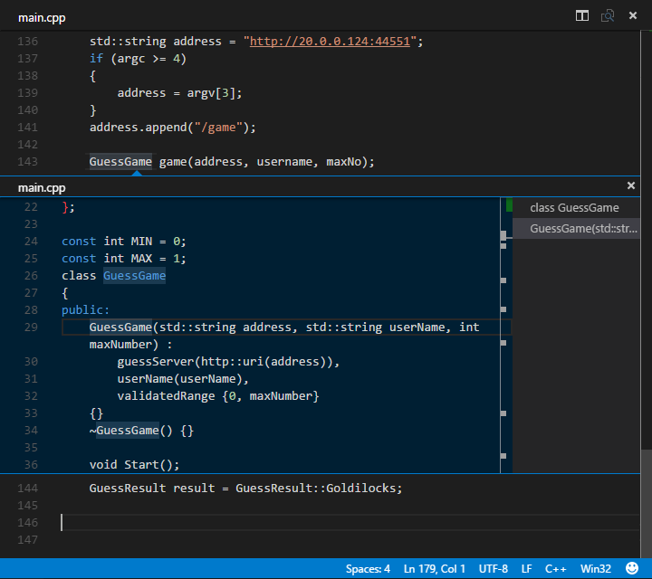
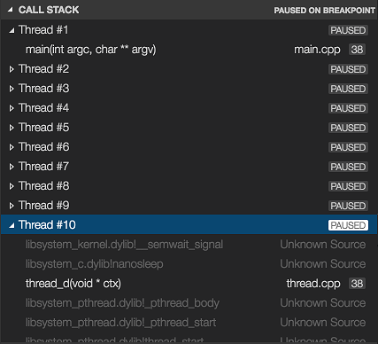

C/C++ for VS Code (Preview)
C/C++ support for Visual Studio Code is provided today as a preview of our work to enable cross-platform C and C++ development using VS Code on Windows, Linux, and Mac. Our focus in this preview release is code editing and navigation support for C and C++ code everywhere that VS Code runs, as well as debugging on Linux, Mac, and Windows.
If you just want a lightweight tool to edit your C++ files, VS Code has you covered but if you want the best possible experience for your existing Visual C++ projects or debugging on Windows, we recommend you use a version of Visual Studio such as Visual Studio Community.
We’re still shaping the C++ experience in VS Code so now is a great time to provide bug reports, feature requests, and feedback, and for those of you who use Linux or Mac as your development environment, to get engaged with the Visual Studio team.
Getting Started
To install the Microsoft C/C++ extension:
- Open VS Code.
- Click the Extensions View icon on the Sidebar.
- Search for
cpptools. - Click Install, then click Enable.
- Open a folder that contains your C/C++ code.
To enable code completion and navigation, you will need to generate a c_cpp_properties.json file:
- Hover over any green squiggle in a source file (e.g. a #include statement).
- Click the lightbulb that appears underneath the mouse cursor.
- Click Add include path to settings.
This will generate a c_cpp_properties.json file that allows you to add additional include paths to properly enable code navigation and auto-completion.
Note: You can also generate or edit a
c_cpp_properties.jsonfile with the C/Cpp: Edit Configurations command from the Command Palette (⇧⌘P (Windows, Linux Ctrl+Shift+P)).
If you want to build your application from VS Code, you will need to generate a tasks.json file:
- Open the Command Palette (⇧⌘P (Windows, Linux Ctrl+Shift+P)).
- Select the Tasks: Configure Task Runner command and you will see a list of task runner templates.
- Select Others to create a task which runs an external command.
- Change the
commandto the command line expression you use to build your application (e.g.g++ -g main.cpp). - Add any required args (e.g.
-gto build for debugging). - You can now build your application with (⇧⌘B (Windows, Linux Ctrl+Shift+B))
You should now see a tasks.json file in your workspace .vscode folder that looks something like:
|
For more information on tasks, see Integrate with External Tools via Tasks.
To enable debugging, you will need to generate a launch.json file:
- Navigate to the Debug view by clicking the Debug icon in the Sidebar.
- In the Debug view, click the Configure icon.
- Select
C++ (GDB/LLDB)(to use GDB or LLDB) orC++ (Windows)(to use the Visual Studio Windows Debugger) from the Select Environment dropdown. This creates alaunch.jsonfile for editing with two configurations:- C++ Launch defines the properties for launching your application when you start debugging.
- C++ Attach defines the properties for attaching to a process that’s already running.
- Update the
programproperty with the path to the program you are debugging. - If you want your application to build when you start debugging, add a
preLaunchTaskproperty with the name of the build task you created intasks.json(“g++” in the example above).
To learn more, see Configuring launch.json for C/C++ debugging.
If you are debugging with GDB on Windows, see Windows Debugging on Cygwin/MinGW.
Editing Code
Code Formatting
The C/C++ extension for Visual Studio Code supports source code formatting using clang-format which is included with the extension.
You can format an entire file with Format Document (⇧⌥F (Windows Shift+Alt+F, Linux Ctrl+Shift+I)) or just the current selection with Format Selection (⌘K ⌘F (Windows, Linux Ctrl+K Ctrl+F)) in right-click context menu. You can also configure auto-formatting with the following settings:
C_Cpp.clang_format_formatOnSave- to format when you save your file.editor.formatOnType- to format as you type (triggered on the ; character).
By default, the clang-format style is set to “file” which means it looks for a .clang-format file inside your workspace. If the .clang-format file is found, formatting is applied according the settings specified in the file. If no .clang-format file is found in your workspace, formatting is applied according to a default style specified in the C_Cpp.clang_format_fallbackStyle setting instead. Currently, the default formatting style is “Visual Studio”. Using “Visual Studio” formatting ensures that source code formatting will be compatible in both VS Code and Visual Studio Community.
The “Visual Studio” clang-format style is not yet an official OOTB clang-format style but it implies the following clang-format settings:
|
If you’d like to use a different version of clang-format than the one that ships with the extension, you can use the C_Cpp.clang_format_path setting and set its value to the path where the clang-format binary is installed.
For example on the Windows platform:
|
Fuzzy Auto-Complete (preview)
Fuzzy auto-complete is powered by an enhanced tag-parser approach. Although suggestions are not based on semantic analysis of your code, this feature provides a wider selection of matches than the single-file IntelliSense experience provided today.
In particular, this feature’s capabilities give a good experience for C code.
Navigating Code
The source code navigation features provided by the C/C++ extension are powerful tools for understanding and getting around in your codebase. These features are powered by tags stored in an offline database of symbol information (in the file browse.VC.db). With the C/C++ extension installed, this database is generated whenever a folder containing C++ source code files is loaded into VS Code. The platform indicator (Win32 in the figure below) turns red and appears next to a flame icon while the tag-parser is generating this information.
When the platform indicator returns to its normal appearance, the source code symbols have been tagged in the offline database and source code navigation features are ready to be used.
Specifying Additional Include Directories for Better Symbol Support
To provide the best experience, the C/C++ extension for VS Code needs to know where it can find each header file referenced in your code. By default, the extension searches the current source directory, its sub-directories, and some platform-specific locations. If a referenced header file can’t be found, VS Code displays a green squiggle underneath each #include directive that references it.
To specify additional include directories to be searched, place your cursor over any #include directive that displays a green squiggle, then click the lightbulb action when it appears. This opens the file c_cpp_properties.json for editing; here you can specify additional include directories for each platform configuration individually by adding more directories to its ‘includePath’ property.

Search for Symbols
You can search for symbols in the current file or workspace to navigate your code more quickly.
To search for a symbol in the current file, press ⇧⌘O (Windows, Linux Ctrl+Shift+O), then enter the name of the symbol you’re looking for. A list of potential matches will appear and be filtered as you type. Choose from the list of matches to navigate to its location.

To search for a symbol in the current workspace, start by pressing ⌘T (Windows, Linux Ctrl+T) instead, then enter the name of the symbol. A list of potential matches will appear as before. If you choose a match that was found in a file that’s not already open, the file will be opened before navigating to the match’s location.

Alternatively, you can search for symbols by accessing these commands through the Command Palette if you prefer. Use Quick Open (⌘P (Windows, Linux Ctrl+P)) then enter the ‘@’ command to search the current file, or the ‘#’ command to search the current workspace. ⇧⌘O (Windows, Linux Ctrl+Shift+O) and ⌘T (Windows, Linux Ctrl+T) are just shortcuts for the ‘@’ and ‘#’ commands, respectively, so everything works the same.
Peek Definition
You can take a quick look at how a symbol was defined by using the Peek Definition feature. This feature displays a few lines of code near the definition inside a peek window so you can take a look without navigating away from your current location.
To peek at a symbol’s definition, place your cursor on the symbol anywhere it’s used in your source code and then press ⌥F12 (Windows Alt+F12, Linux Ctrl+Shift+F10). Alternatively, you can choose Peek Definition from the context menu (right-click, then choose Peek Definition).

Currently, the C/C++ extension doesn’t parse code in a way that helps it distinguish between competing definitions based on how the symbol is used. These competing definitions arise when the symbol defines different things in different contexts, such as occurs with overloaded functions, classes and their constructors, and other situations. When this happens, each of the competing definitions are listed in the right-hand side of the peek window with the source code of the current selection displayed on the left.
With the peek window open, you browse the list of competing definitions to find the one you’re interested in. If you want to navigate to the location of one of the definitions just double-click the definition you’re interested in, or by double-clicking anywhere in the source code displayed on the left-hand side of the peek window.
Go to Definition
You can also quickly navigate to where a symbol is defined by using the Go to Definition feature.
To go to a symbol’s definition, place your cursor on the symbol anywhere its used in your code and then press F12. Alternatively, you can choose Go to Definition from the context menu (right-click, then choose Go to Definition). When there’s only one definition of the symbol, you’ll navigate directly to its location, otherwise the competing definitions are displayed in a peek window as described in the previous section and you have to choose the definition that you want to go to.
Debugging
After you have set up the basics of your debugging environment as specified in Getting Started, you can learn more details about debugging C/C++ in this section.
VS Code supports the following debuggers for C/C++ depending on the operating system you are using:
- Linux: GDB
- OS X: LLDB or GDB
- Windows: the Visual Studio Windows Debugger or GDB (using Cygwin or MinGW)
Windows Debugging with GDB on Cygwin/MinGW
You can debug Windows applications created using Cygwin or MinGW by using VS Code. To use Cygwin or MinGW debugging features, the debugger path must be set manually in the launch configuration (launch.json). To debug your Cygwin or MinGW application, add the miDebuggerPath property and set its value to the location of the corresponding gdb.exe for your Cygwin or MinGW environment.
For example:
|
Cygwin/MinGW debugging on Windows supports both attach and launch debugging scenarios.
Conditional Breakpoints
Conditional breakpoints enable you to break execution on a particular line of code only when the value of the condition is true. To set a conditional breakpoint, right-click on an existing breakpoint and select Edit Breakpoint. This opens a small peek window where you can enter the condition that must evaluate to true in order for the breakpoint to be hit during debugging.

In the editor, conditional breakpoints are indicated by a breakpoint symbol that has a black equals sign inside of it. You can place the cursor over a conditional breakpoint to show its condition.
Function Breakpoints
Function breakpoints enable you to break execution at the beginning of a function instead of on a particular line of code. To set a function breakpoint, on the Debug pane right-click inside the Breakpoints section, then choose Add Function Breakpoint and enter the name of the function on which you want to break execution.
Expression Evaluation
VS Code supports expression evaluation in several contexts:
- You can type an expression into the Watch section of the Debug panel and it will be evaluated each time a breakpoint is hit.
- You can type an expression into the Debug Console and it will be evaluated only once.
- You can evaluate any expression that appears in your code while you’re stopped at a breakpoint.
Note that expressions in the Watch section take effect in the application being debugged; an expression that modifies the value of a variable will modify that variable for the duration of the program.
Multi-threaded Debugging
The C/C++ extension for VS Code has the ability to debug multi-threaded programs. All threads and their call stacks appear in the Call Stack section:

Memory Dump Debugging
The C/C++ extension for VS Code also has the ability to debug memory dumps. To debug a memory dump, open your launch.json file and add the coreDumpPath (for GDB or LLDB) or dumpPath (for the Visual Studio Windows Debugger) property to the C++ Launch configuration, set its value to be a string containing the path to the memory dump. This will even work for x86 programs being debugged on an x64 machine.
Additional Symbols
If there are additional directories where the debugger can find symbol files (e.g., .pdb files for the Visual Studio Windows Debugger), they can be specified by adding the additionalSOLibSearchPath (for GDB or LLDB) or symbolSearchPath (for the Visual Studio Windows Debugger).
For example:
|
or
|
GDB, LLDB and MI Commands (GDB/LLDB)
For the C++ (GDB/LLDB) debugging environment, you can execute GDB, LLDB and MI commands directly through the debug console with the -exec command, but be careful, executing commands directly in the debug console is untested and might crash VS Code in some cases.
Other Debugging Features
- Unconditional breakpoints
- Watch window
- Call stack
Stepping
For more information on debugging with VS Code, see this introduction to debugging in VS Code.
Known Limitations
Symbols and Code Navigation
All platforms:
- Because the extension doesn’t parse function bodies, Peek Definition and Go to Definition don’t work for symbols defined inside the body of a function.
Debugging
All platforms:
- There is no way to specify the source file mappings from the compiled locations to the current location. This prevents debugging an application in a different file system layout than where it was compiled.
Windows:
- GDB on Cygwin and MinGW cannot break a running process. To set a breakpoint when the application is running (not stopped under the debugger), or to pause the application being debugged, press Ctrl-C in the application’s terminal.
- GDB on Cygwin cannot open core dumps.
Linux:
- GDB needs elevated permissions to attach to a process. When using attach to process, you need to provide your password before the debugging session can begin.
OS X:
- LLDB:
- When debugging with LLDB, if the Terminal window is closed while in break mode, debugging does not stop. Debugging can be stopped by pressing the Stop button.
- When debugging is stopped the Terminal window is not closed.
- GDB:
- Additional manual install steps need to be completed to use GDB on OS X. See Manual Installation of GDB for OS X in the README.
- When attaching to a process with GDB, the application being debugged cannot be interrupted. GDB will only bind breakpoints set while the application is not running (either before attaching to the application, or while the application is in a stopped state). This is due to a bug in GDB.
- Core dumps cannot be loaded when debugging with GDB because GDB does not support the core dump format used in OS X.
- When attached to a process with GDB, break-all will end the process.
Next Steps
Read on to find out about:
- Editing Evolved - find out more about advanced editing features
- Tasks - use tasks to build your project and more
- Debugging - find out how to use the debugger with your project
Common Questions
Q: My project won’t load.
A: VS Code doesn’t currently support C++ project files, instead it considers a directory of your choosing to be the workspace of your project. Source code files inside that directory and its sub-directories are part of the workspace.
Q: IntelliSense isn’t working.
A: In this release, IntelliSense isn’t supported. We plan to enable this and other features in future releases.
Q: How do I build/run my project?
A: VS Code supports tasks that you can configure to build your application, and natively understands the output of MSBuild, CSC, and XBuild. For more information, see the Tasks documentation.
Q: Why is there a .browse.VC.db file in my workspace?
A: The C/C++ extension automatically creates a database of symbol information for your workspace and stores it in a .browse.VC.db file in your workspace’s .vscode folder. This improves the extension’s performance and this file should not be added to source control.
If you have any other questions or run into any issues, please file an issue on GitHub.